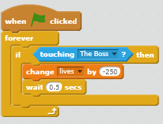
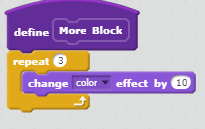
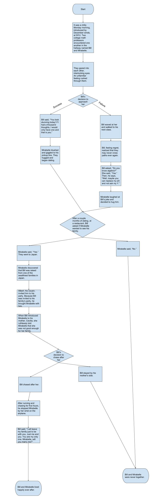

Game Description
You play as a Roblox charcater and your goal is to destory Roblox.
Everytime you destroy your enemy, you will gain a certain amount of points.
The enemy will start to randomly fall down in order to hit you.
The game gets more difficult when you defeat the first level.
The game ends when you defeat both bosses or when you get hit.
Reflection Piece
We made this game to spread awareness about these two competing games. The inspiration comes from the countless hours in playing those games.
One sucessful point is how we inputted the Roblock background into our home screen. Another sucessful point is how we added a flamethrower aspect to inflict continuous damage.
One obstacle is time and how my parter and my time didn't align. Another obstacle was trying to get the fire to align with the sprite. We overcame this by searching up how to do the algorithm oursleves.
If we had more time, we would add more levels and more high quality photos.
It is algorithm because it a series of steps. This algorithm shows how we can reduce the health of the Boss.
 Crazy Wealthy AsianZ
This is a story between two star-crossed lovers, Bill and Mirabelle, who begin dating. Mirabelle faces criticism from Bill's family because she was an American. Mirabelle and Bill both make decisions that determine whether they get married or get separated.
For the incremental process of the program, my partner and I constructed our story based off of three decisions. We determined the settings and the characters in each scene while progressively plotted actions that would affect the outcomes of the story. During the iterative development process, we returned to the story and added extra descriptions. A difficulty I faced was accessing the “repl” that my partner worked on; we resolved this by communicating with each other of what times we were available. Another difficulty was adding quotation marks and any special characters to our text which was resolved by finding where our other apostrophes were placed and adding the appropriate symbol.
Procedural abstraction is introduced by organizing each scene into different parts. The story provides the user a story of what will happen and that outcome is determined by the user. When separated into functions, the user has the oppotunity to create his or her own endings and scenes. The advantage is that it allows the reader to view each individual program.
A story that I appreciate is the story of Cinderella which is similar to Crazy Wealthy Asianz. Cinderella is similar to Mirabelle because they both left without saying anything. Prince Charming, like Bill, attemptts to find and chase after her in order to confess his love for her. Their intense passion for each other connects is very fulfilling and shows the true meaning of love.